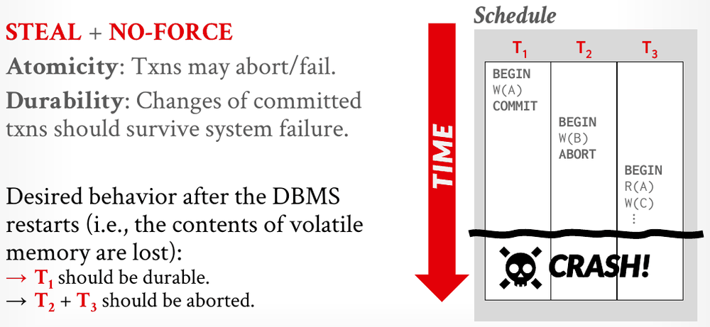
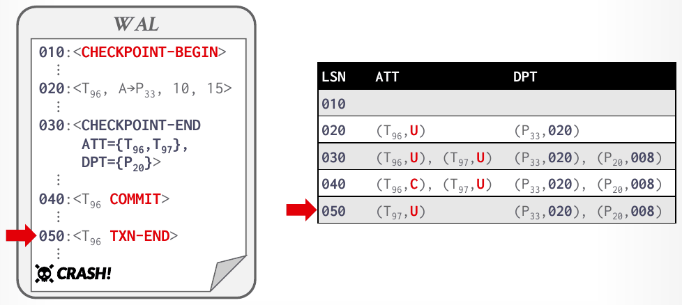

Database Internals in Go · Unit 9 · Lesson 4
ARIES Recovery: Analysis, Redo, and Undo
Recover a database from its write-ahead log with ARIES: rebuild the ATT and DPT in the analysis phase, repeat history in the redo phase, roll back the losers with CLRs in the undo phase, and say which pages, records and transactions each phase is certain or only possibly going to touch.
Lesson 3 covered what ARIES writes while the system runs: LSNs on every record and page, COMMIT, CLR and TXN-END records, and fuzzy checkpoints whose CHECKPOINT-END carries the ATT and DPT as of CHECKPOINT-BEGIN. After a crash, memory is gone. The buffer pool, the ATT, the DPT and the unflushed log tail are lost, and the disk holds whatever pages the buffer pool happened to write. This lesson is the restart: three passes over the log that bring the database back to a state where every committed change is present and every other change is gone. Lecture #22 teaches the algorithm, and HW6's log is the worked example.
Unit 9, Lesson 1: recovery after a crash under STEAL + NO-FORCE needs both undo and redo. Which of the two policies is the reason undo is needed?
Unit 1, Lesson 2: a record ID names a tuple by its page and slot number. Why does the slot number stay valid when the tuple moves within its page?
Unit 8, Lesson 6: in Project 4, a transaction inserts a fresh tuple and then aborts. What does Abort do with that tuple?
The goal and the three phases

ARIES recovers in three phases (slide 32):
- Analysis reads the WAL forward, starting at the checkpoint the MasterRecord names, to find out which pages were dirty in the buffer pool and which transactions were active at the time of the crash.
- Redo repeats all actions from an appropriate point in the log, even those of transactions that will abort.
- Undo reverses the actions of transactions that did not commit before the crash.
![Left, text: Start from last BEGIN-CHECKPOINT found via MasterRecord. Analysis: figure out which txns committed or failed since checkpoint. Redo: repeat all actions. Undo: reverse effects of failed txns. Right: a WAL drawn as a column of records with a downward TIME arrow and CRASH at the bottom. Three labels mark positions in the log, from top to bottom: Oldest log record of txn active at crash; Smallest recLSN in DPT after Analysis; Start of last checkpoint. Arrow A (1) runs down from the start of the last checkpoint to the crash, arrow R (2) runs down from the smallest recLSN to the crash, and arrow U (3) runs up from the crash to the oldest record of a txn active at the crash.](../assets/slides/L22-aries-phases-p65.png)
#22 Database Crash Recovery, "ARIES recovery process" (44:17), slides 32–46: the three phases, the analysis example, redo's skip rules, undo, the full example with a second crash, and the conclusion. The chapter runs about 22 minutes with no breaks between the phases.
Analysis
The analysis phase scans the log forward from the CHECKPOINT-BEGIN of the last successful checkpoint to the end of the log, and rebuilds the ATT and DPT as it goes (slide 34):
- A TXN-END record removes its transaction from the ATT.
- Any other record of a transaction that isn't in the ATT adds it, with status U (candidate for undo).
- A COMMIT record changes the transaction's status to C.
- An update record whose page isn't in the DPT adds the page, with recLSN set to the record's LSN.
Each record also becomes its transaction's lastLSN. When the scan reaches the CHECKPOINT-END, analysis takes in the tables it carries. At the end of the phase (slide 35), the ATT says which transactions were active at the time of the crash, and the DPT says which dirty pages might not have made it to disk.

P20's recLSN of 008 also tells redo where to start. P20 was dirtied before the checkpoint began and might still not be on disk, so redo has to begin before the checkpoint, at 008.
Redo
The redo phase repeats history: it reconstructs the state of the database at the moment of the crash by reapplying all updates, even those of transactions that will abort, and redoing CLRs (slide 37). The slide adds that there are techniques to avoid unnecessary reads and writes, which the lecture ignores.
Redo scans forward from the log record with the smallest recLSN in the DPT. For each update record or CLR, it redoes the action unless one of three conditions holds (slide 38):
- The target page is not in the DPT.
- The target page is in the DPT, but the record's LSN is less than the page's recLSN.
- The target page is in the DPT, but the record's LSN ≤ the page's pageLSN.
The first two tests use only the DPT, so the DBMS doesn't need to read the page from disk for them. The third needs the page's pageLSN, so the DBMS must fetch the page. A record that passes the first two tests is a change that might be missing; the pageLSN on disk says whether it really is.
To redo an action, the DBMS reapplies the logged update and sets the page's pageLSN to the record's LSN (slide 39). It writes no log records and forces no flushes. At the end of the phase it writes a TXN-END record for every transaction with status C and removes those transactions from the ATT: they committed, and redo has put their changes back.
Undo
The undo phase rolls back every transaction that was active at the crash and will therefore never commit: the transactions with status U in the ATT after analysis (slide 40), which this lesson calls the losers. It processes them in reverse LSN order, in a single backward pass over all of them, using the lastLSNs to speed up the traversal. At each step it picks the largest lastLSN across all the transactions in the ATT:
- If the record is an update, undo restores the old value, writes a CLR for it, and moves on to the update's prevLSN.
- If the record is a CLR, nothing is undone, because CLRs never need to be undone. Undo jumps to the CLR's undoNextLSN.
- When a transaction's chain reaches its BEGIN, undo writes its TXN-END.
Undo goes through one transaction's records in the reverse of the order in which they happened, interleaved with the other losers' records by LSN. The notes add that once the last transaction has been aborted, the DBMS flushes the log and is ready to process new transactions.
The lecture's full example
Slides 41 to 43 run all of this on one log, with a second crash during undo. Two records on the slides are misprinted, so this lesson uses a corrected version:
011:<CHECKPOINT-BEGIN>
012:<CHECKPOINT-END> (ATT: T1 003, T2 004, T3 005; DPT: P1 001)
013:<T1, A→P5, 1, 2>
014:<T2, B→P3, 2, 3>
015:<T1 ABORT>
016:<T1 CLR-013, A→P5, UndoNext=003>
017:<T1 TXN-END>
018:<T3, C→P1, 4, 5>
019:<T2, A→P5, 6, 7>
CRASH!Corrections to slides 41 to 43
The slides print record 016 as <T1 CLR-014, B→P3, UndoNext=013>. Record 014 is T2's update, so as printed T1's abort would undo another transaction's change. T1's only update is 013, so its CLR compensates 013, on A→P5, and points to T1's record before it. The slides also print the first CLR of the recovery, 101, on D→P5; the record it undoes, 019, is on A→P5. Finally, the slides leave the CHECKPOINT-END's contents out, but the analysis starts from ATT entries T1, T2 and T3 with lastLSNs 003, 004 and 005 (their BEGINs) and a DPT holding P1 with recLSN 001, shown in parentheses above.
Analysis starts at 011 and takes in the checkpoint's tables at 012. Then 013 sets T1's lastLSN and adds P5 (recLSN 013), 014 sets T2's and adds P3 (recLSN 014), 015 and 016 move T1's lastLSN on, and 017 removes T1. 018 sets T3's lastLSN to 018 (P1 is already in the DPT), and 019 sets T2's to 019. At the crash the ATT holds T2 (U, 019) and T3 (U, 018), and the DPT holds P1 (001), P3 (014) and P5 (013).
Redo starts at 001, P1's recLSN, before the checkpoint; the slides don't show the records before 011. No transaction has status C, so redo writes no TXN-END.
Undo takes the largest lastLSN first:
101:<T2 CLR-019, A→P5, UndoNext=014> undo 019 (T2's lastLSN, the largest)
102:<T3 CLR-018, C→P1, UndoNext=005> undo 018 (now larger than T2's 014)
103:<T3 TXN-END> 005 is T3's BEGIN, so T3 is doneThe DBMS flushes dirty pages and the WAL, and then the system crashes again, before T2's undo is finished. The second recovery's analysis finds T2 still without a TXN-END, now with lastLSN 101, and T3 gone. Undo reads 101, sees a CLR, and jumps to its undoNextLSN instead of undoing anything:
201:<T2 CLR-014, B→P3, UndoNext=004>
202:<T2 TXN-END>Record 019 is not undone a second time. This is ARIES's third idea from Lesson 3: logging changes during undo, so that an undo action is not repeated if the system fails again. A crash during analysis or redo needs nothing special (slide 44): analysis just runs again, and redo redoes everything again, which is safe because the pageLSN test skips what is already on the page and redo writes no log records.
Slide 45 adds two ways to speed recovery up. During redo, the DBMS can assume it won't crash again and flush all changes to disk asynchronously in the background. During undo, it can roll back changes lazily, just before new transactions access the pages, and applications can avoid long-running transactions. Slide 46 sums up ARIES: WAL with STEAL and NO-FORCE, fuzzy checkpoints that snapshot the dirty page IDs, redo of everything since the earliest dirty page, undo of transactions that never commit, CLRs written during undo to survive failures during restarts, and LSNs linked into backward chains per transaction, with the pageLSN to compare a data page with the log.
BusTub declares a LogRecovery class with Redo() and Undo() and an active_txn_ map ("Maintain active transactions and its corresponding latest lsn", an ATT of lastLSNs), but there is no log_recovery.cpp, no analysis phase and no DPT, and the recovery tests are disabled. Project 4's undo logs are a different thing: they live in each transaction's in-memory workspace so that readers can rebuild older versions, and the writeup says they are not persisted. They vanish in a crash. ARIES's undo uses the before-images in the log on stable storage and writes CLRs there.
Worked example: HW6's log
HW6 Question 1(c) crashes this log right after record 1023 is flushed. As in Lesson 3, each object is its own page, the database started clean, and a background thread flushes dirty pages from time to time. The question adds one assumption: the DPT recorded in CHECKPOINT-END 1017 is empty.
1000 <T1, BEGIN, prevLSN=∅>
1001 <T2, BEGIN, prevLSN=∅>
1002 <T3, BEGIN, prevLSN=∅>
1003 <T1, UPDATE, prevLSN=1000, A, 1, 2>
1004 <T3, UPDATE, prevLSN=1002, C, 1, 2>
1005 <T3, COMMIT, prevLSN=1004>
1006 <CHECKPOINT-BEGIN>
1007 <T1, UPDATE, prevLSN=1003, B, 1, 2>
1008 <T4, BEGIN, prevLSN=∅>
1009 <T4, UPDATE, prevLSN=1008, C, 2, 3>
1010 <CHECKPOINT-END, DPT={C}, ATT={???}>
1011 <T2, UPDATE, prevLSN=1001, D, 1, 2>
1012 <T4, UPDATE, prevLSN=1009, E, 1, 2>
1013 <T3, TXN-END, prevLSN=1005>
1014 <CHECKPOINT-BEGIN>
1015 <T1, UPDATE, prevLSN=1007, A, 2, 3>
1016 <T4, UPDATE, prevLSN=1012, E, 2, 3>
1017 <CHECKPOINT-END, DPT={???}, ATT={???}>
1018 <T1, UPDATE, prevLSN=1015, A, 3, 4>
1019 <T4, ABORT, prevLSN=1016>
1020 <CHECKPOINT-BEGIN>
1021 <T1, COMMIT, prevLSN=1018>
1022 <T4, CLR, prevLSN=1019, E, 3, 2, undoNextLSN=1012>
1023 <T1, TXN-END, prevLSN=1021>
CRASH!Try each phase yourself before reading it.
Analysis
The log has three CHECKPOINT-BEGINs, but the one at 1020 never got its CHECKPOINT-END, so the MasterRecord still names 1014's checkpoint, and analysis starts at 1014. From Lesson 3, the ATT in CHECKPOINT-END 1017 is T1, T2 and T4, as of 1014; T2's lastLSN then was 1011. Its DPT is empty by assumption. The scan:
| LSN | Record | ATT afterwards | DPT afterwards |
|---|---|---|---|
| 1014 | CHECKPOINT-BEGIN | (empty) | (empty) |
| 1015 | T1 updates A | T1 U 1015 | A 1015 |
| 1016 | T4 updates E | T1 U 1015, T4 U 1016 | A 1015, E 1016 |
| 1017 | CHECKPOINT-END | adds T2 U 1011 | nothing to add |
| 1018 | T1 updates A | T1 U 1018, T4 U 1016, T2 U 1011 | A 1015, E 1016 |
| 1019 | T4 ABORT | T4 U 1019 | unchanged |
| 1020 | CHECKPOINT-BEGIN | unchanged | unchanged |
| 1021 | T1 COMMIT | T1 C 1021 | unchanged |
| 1022 | T4's CLR on E | T4 U 1022 | unchanged (E is already there) |
| 1023 | T1 TXN-END | T1 removed | unchanged |
Result: ATT = {T2 (U, 1011), T4 (U, 1022)} and DPT = {A (recLSN 1015), E (recLSN 1016)}. T4's ABORT leaves it a candidate for undo: an abort is finished only when its TXN-END is written, and T4's undo was cut short after one CLR.
Redo
Redo starts at 1015, the smallest recLSN. Every update before 1014 was on disk when the checkpoint began, since its DPT was empty. From 1015 on, the update records and CLRs are 1015 and 1018 on A, and 1016 and 1022 on E. All four target pages in the DPT, and none has an LSN below its page's recLSN, so the first two skip conditions don't apply. Whether each is redone depends on the third, the pageLSN of the page on disk, and that depends on what the background writer flushed.
Take A. It was clean at 1014, so its disk copy then carried pageLSN 1003. Since then the background writer may have flushed A after 1015, after 1018, or not at all, so the page redo reads has pageLSN 1003, 1015 or 1018:
- pageLSN 1003: 1015 is redone (A=3, pageLSN 1015), and then 1018 is redone (A=4, pageLSN 1018).
- pageLSN 1015: 1015 is skipped, and 1018 is redone.
- pageLSN 1018: both are skipped.
E works the same way with 1016 and the CLR 1022; remember that redo treats a CLR like any update. No transaction has status C at the end of redo, because T1's TXN-END is already in the log.
Undo
The losers are T2 (lastLSN 1011) and T4 (lastLSN 1022). The largest lastLSN is 1022, T4's CLR, so undo writes nothing for it and jumps to its undoNextLSN, 1012: record 1016 was already compensated before the crash. Now T4's next record is 1012 and T2's is 1011. 1012 is larger, so undo restores E to 1 and writes the first new record. If recovery numbers its records from 1024:
1024 <T4, CLR, prevLSN=1022, E, 2, 1, undoNextLSN=1009>The pass goes on the same way, always taking the larger of the two next LSNs, until both chains reach their BEGINs. The first "Work it out" item below asks you to finish it.
Work it out
These are the parts of HW6 Question 1(c) that the quiz below doesn't ask, plus the end of the undo pass. Decide each one and say why before opening the result.
-
What to think about
After 1024, what is the next LSN to examine for T4, and for T2? Which is larger?
The method
Repeat: take the larger next LSN; for an update, write a CLR (before and after swapped, undoNextLSN = the update's prevLSN, prevLSN = the transaction's previous record) and move to its prevLSN; when a transaction's chain reaches its BEGIN, write its TXN-END. For the final values, start from the state after redo, which includes every logged change.
The result
1025 <T2, CLR, prevLSN=1011, D, 2, 1, undoNextLSN=1001> 1026 <T2, TXN-END, prevLSN=1025> 1027 <T4, CLR, prevLSN=1024, C, 3, 2, undoNextLSN=1008> 1028 <T4, TXN-END, prevLSN=1027>After 1024, T4's next is 1009 and T2's is 1011, so T2 goes first: 1011's prevLSN is 1001, T2's BEGIN, so T2 ends at 1026. Then T4's 1009, whose prevLSN 1008 is T4's BEGIN. The database ends with A=4, B=2, C=2, D=1, E=1, whatever the background writer had flushed: T1's and T3's changes stay, T2's change to D and all three of T4's changes are gone. (HW6 asks only for counts; the LSNs from 1024 on are this lesson's numbering.)
-
What to think about
When is the MasterRecord written, and which of the checkpoint's two records does it point to?
The method
List the checkpoints in the log and check which ones completed. Then reread Lesson 3's slide 31: what goes into the MasterRecord, and when?
The result
1014. The MasterRecord gets the LSN of the CHECKPOINT-BEGIN when the checkpoint completes (slide 31). 1006 begins an older completed checkpoint. 1017 is a CHECKPOINT-END, and analysis must start at the BEGIN because the END's tables describe that moment. 1020's checkpoint never wrote its END, so it never completed. The official solution: "1014, the LSN for the last CHECKPOINT-BEGIN corresponding to an CHECKPOINT-END that has been flushed."
-
What to think about
Which pages have a logged change that the background writer may or may not have flushed?
The method
The empty DPT at 1014 says every earlier change was on disk then. Look for the pages changed after 1014.
The result
A and E. A changes at 1015 and 1018, E at 1016 and 1022 (the CLR), and nothing says whether the background writer flushed them afterwards. These are exactly the pages analysis puts in the DPT: pages that might not have made it to disk.
-
What to think about
Where does the redo scan start, and what does that say about the records before it?
The method
List every update or CLR before the smallest recLSN of the DPT after analysis.
The result
1003, 1004, 1007, 1009, 1011 and 1012. Redo scans from 1015, so it never even looks at them. The official solution: "Because the DPT at 1017 is empty, we know that updates before 1014 must have been flushed before the checkpoint finished. Those updates will definitely not be redone."
-
What to think about
Which transactions have status U in the ATT after analysis? Does an ABORT record end a transaction?
The method
For each of T1 to T4, find its COMMIT, ABORT and TXN-END records, if any.
The result
T2 and T4. The official solution: T1 committed at 1021; T2 did not commit before the crash, so the DBMS has to undo it; T3 committed at 1005; T4 aborted at 1019, so the DBMS has to undo it. T4's abort had compensated only 1016 when the system crashed.
-
What to think about
Which phase writes CLRs, and which transactions does it touch?
The method
Only undo writes CLRs, one per update it undoes. Count each loser's updates that no CLR has compensated yet.
The result
T1: 0. T2: 1. T3: 0. T1 committed (1021) and ended (1023); redo restores its changes if needed, and undo never touches it. T2 has one update, 1011, so it gets one CLR (1025 in the first item) and then its TXN-END. T3 committed at 1005 and ended at 1013, before the checkpoint analysis starts from, so it isn't even in the ATT.
The homework behind these questions
The questions marked HW6 come from CMU's Homework #6: Question 1, with the original figures. Work each one out on paper first, then click the option you got. The quiz tells you at once whether it matches CMU's official answer, and explains why. To compare your working step by step, open the official solutions for Question 1.
Check your understanding
These questions use HW6's log above, crashed right after 1023, with an empty DPT in CHECKPOINT-END 1017.
HW6 Q1(c)ii: which pages are definitely not dirty at the time the last WAL record was written?
HW6 Q1(c)iii: which pages are definitely dirty at the time the database crashed?
HW6 Q1(c)v: which log records will definitely be redone in the redo phase?
HW6 Q1(c)vii: which log records will maybe be redone in the redo phase?
HW6 Q1(c)xii: how many new CLRs does recovery add to the WAL for T4? Don't count CLRs that were in the log before the crash.
Primary sources: CMU 15-445/645 Fall 2025 Lecture #22 slides 4 and 32–46 and notes (section 5); Homework #6 Question 1(c), parts i to xii, with the official solutions; BusTub src/include/recovery/log_recovery.h and test/recovery/ at commit d49b823; the Project #4 writeup (undo logs).